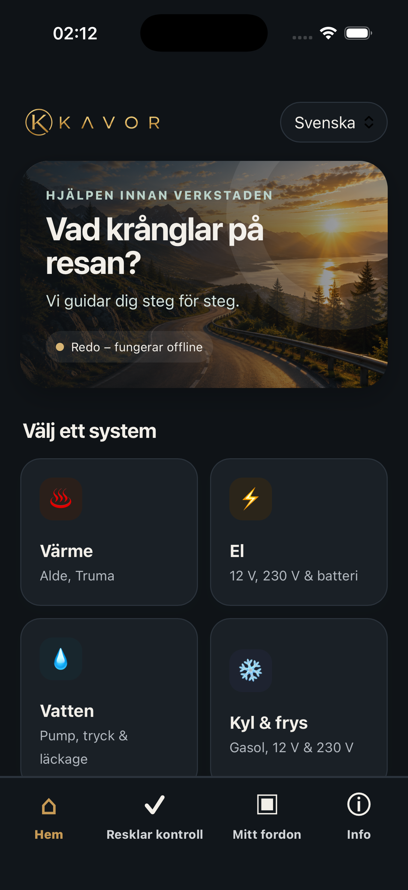

Värme
Värmare, varmvatten och vanliga kontroller för Alde och Truma.
Hjälpen innan verkstaden
Kavor guidar dig i husbilen och husvagnen. Följ tydliga steg, förstå vad du kan kontrollera själv och se när det är dags att kontakta en fackman.

Vanliga system
Kavor samlar felsökningen på ett ställe och använder enkelt språk genom hela flödet.
Värmare, varmvatten och vanliga kontroller för Alde och Truma.
12 V, 230 V, bodelsbatteri, laddning och säkra grundkontroller.
Pump, tryck, färskvatten och hjälp att förstå vanliga läckage.
Felsökning för gasol, 12 V och 230 V med tydliga säkerhetsstopp.
Så fungerar Kavor
Börja med värme, el, vatten eller kyl och frys.
Svara på enkla frågor och gör säkra kontroller steg för steg.
Se vad du kan göra själv och när verkstad eller tekniker behövs.
Efter många års arbete med både husbilar och husvagnar fick jag idén att skapa en app för att hjälpa andra med lättare problem som kan dyka upp. Detta har nu resulterat i Kavor – en guide för att avhjälpa mindre problem som du kan lösa själv genom de olika stegen i appen.

Viktigt om säkerhet
Avbryt alltid vid gaslukt, rök, brandrisk, onormal värme eller annan akut fara. Följ fordonets bruksanvisning och anlita behörig tekniker när det behövs.
På väg till App Store och Google Play
Webbplatsen uppdateras med länkar till App Store och Google Play så snart appen är godkänd och tillgänglig.
kavor.appinfo@gmail.com